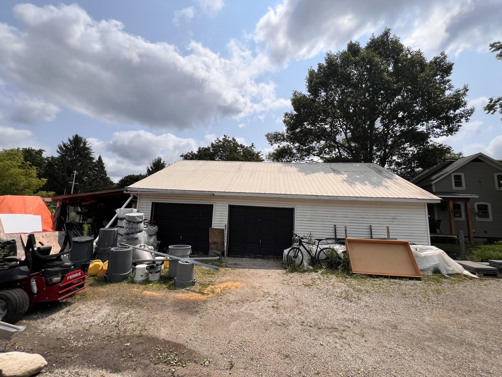
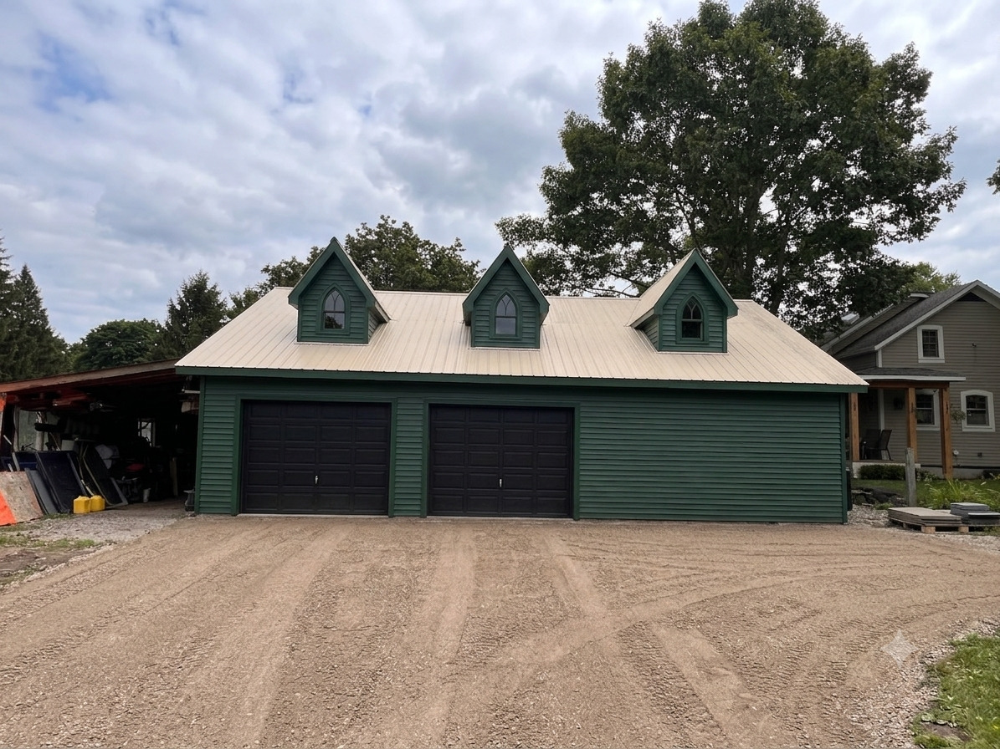

Visualize Your Renovation Before You Build
See what your home could become before construction begins.
Oakwaters Construction can create concept visualizations from photographs of your existing home, helping you explore renovation ideas, materials, finishes and transformations before moving forward with your project.
Interior Transformation
Drag the slider to compare the existing fireplace with a possible renovation concept.


Reimagining your Kitchen
Explore how lighting, design details and finishes can change the character of an existing space.


Bathroom Renovation and Remodel
Compare the existing property with a concept showing how a renovation could transform its appearance and character.


An Exterior Remodel
Use the slider to see how design ideas can be visualized using a photograph of the existing property.


Outdoor Multipurpose Building
Explore how a revovation and remodel can create gathering, storage or living space while adding value to your property as an extension of your home.


Explore the Possibilities
Concept visualization can help you explore different directions for your renovation before important design decisions are made.
Exteriors
Explore siding, masonry, windows, entrances, rooflines and architectural details.
Interiors
Consider new layouts, cabinetry, finishes, materials and architectural treatments.
Additions
Visualize how additional living space might integrate with the character of your existing home.
Outdoor Spaces
Explore landscaping, patios, entrances and other exterior improvements as part of the overall project.